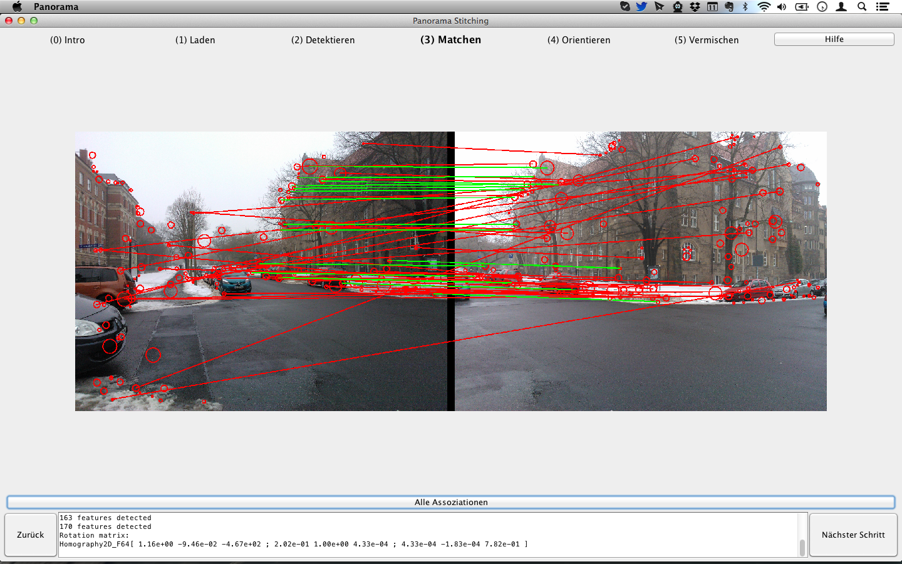

Im vorangehenden Schritt wurden Interest Points in allen Bildern detektiert. Um die Bilder relativ zueinander orientieren (und damit zusammenzusetzen) zu können, muss derselbe Punkt in benachbarten Bilden identifiziert, also ein Matching zwischen jedem Punkt in Bild A und Bild B berechnet werden. Dazu wird ein Greedy-Algorithmus basierend auf der Methode der kleinsten Quadrate der SURF Deskriptoren angewandt: Jeder Punkt in Bild A wird mit dem bestpassenden in Bild B gematcht.
Es werden beispielhaft die homologen Punktepaare der ersten zwei Bilder dargestellt (Button Alle Assoziationen). Grüne Linien markieren Punktepaare, welche die relative Orientierung beschreiben - ja, hier wird eigentlich einen Schritt vor gegriffen. Rote Linien markieren fehlerhafte Matches.
